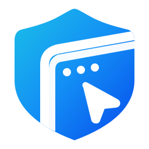

P2P и Relay — внутри сессии
Статус соединения больше не живёт отдельной маркетинговой карточкой. Пользователь видит реальный маршрут там, где работает.
Нажмите «P2P · 24 мс» в демо
FuntiDesk Попробовать ↗Удалённый доступ, который остаётся вашим
Свои устройства. Своя инфраструктура. Понятное соединение. Прямой P2P, когда возможно, и Relay через ваш сервер, когда нужен запасной маршрут.
СВЯЗЬ НАЧИНАЕТСЯ С ВАС
Удалённый доступ, который остаётся вашим. Свои устройства. Своя инфраструктура. Понятное соединение.
01 / ПОНЯТНАЯ СВЯЗЬ
Не отдельная техническая схема: маршрут показывается прямо в интерфейсе активной сессии.
Статус соединения больше не живёт отдельной маркетинговой карточкой. Пользователь видит реальный маршрут там, где работает.
Нажмите «P2P · 24 мс» в демоЗадержка, шифрование и резервный Relay не перегружают интерфейс. Они открываются только когда нужны.
Экран, ввод, файлы, звонок и маршрут соединения показаны как элементы одной активной сессии, а не как параллельный веб-продукт.
02 / ИНТЕРАКТИВНАЯ СРЕДА
Семейный доступ, запрос помощи и звонок показываются как сценарии FuntiDesk, а не как отдельное приложение.
Запросов помощи пока нет
Нажмите «Попросить помощи» на компьютере слева.Семья — доверенные устройства: доступные по выбранным разрешениям действия выполняются без подтверждения, в том числе когда за компьютером никого нет. На звонок нужно ответить. Все действия здесь — локальная симуляция.
Сценарий меняется локально: P2P, Relay или смена сети. Реальный транспорт браузер здесь не устанавливает.
Это интерактивная демонстрация интерфейса. Реальные удалённые сессии выполняют клиенты FuntiDesk.
03 / НАЧАТЬ С WINDOWS
Windows-клиент уже доступен. Android — тестовая сборка. iOS — в планах. Демонстрация на этой странице не выдаётся за отдельный готовый web-клиент.
Ссылки ведут в GitHub Releases. Android APK предназначен для тестирования.04 / ДЕТАЛИ
После разового сопряжения по шестизначному коду доверенные устройства семьи могут использовать разрешённые действия без диктовки ID и пароля. На звонок по-прежнему нужно ответить.
Нет. Веб-блок на этой странице — интерактивная демонстрация интерфейса и локальная симуляция. Реальные удалённые сессии выполняют клиенты FuntiDesk.
P2P — прямое соединение между устройствами. Relay — резервный путь через сервер FuntiDesk, когда прямой маршрут недоступен.
Обычное iOS-приложение может передавать экран в сценарии просмотра, но полноценное удалённое управление касаниями iPhone стандартными средствами iOS не предоставляется. Поэтому мы не обещаем полный контроль iPhone.